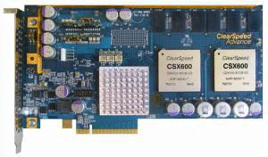
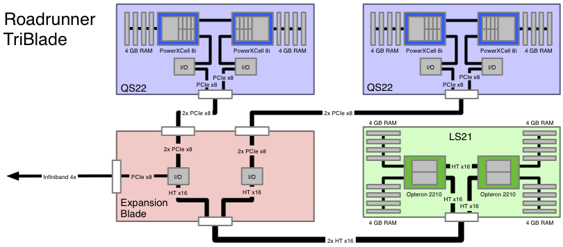
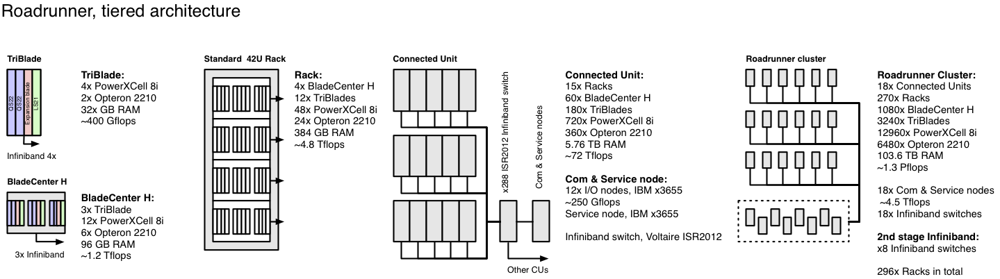
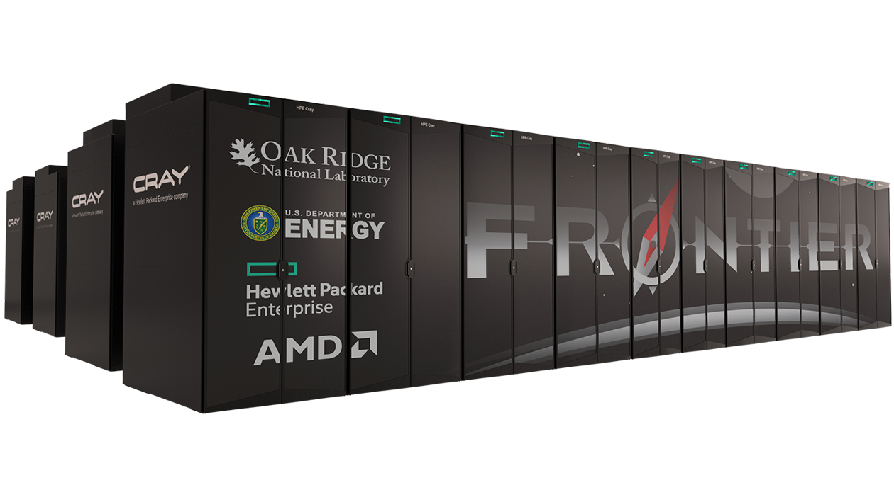
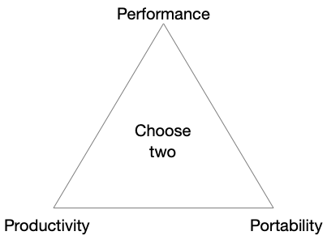
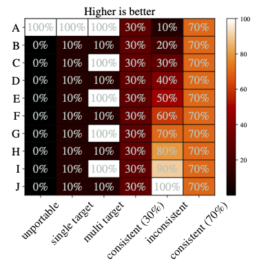
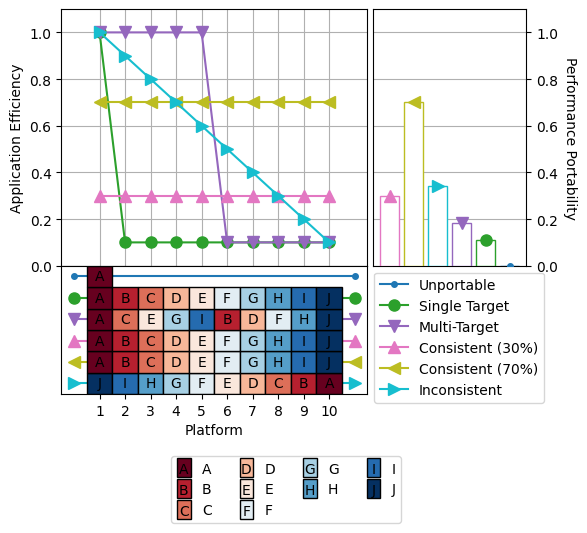

10. Heterogeneous Programming
Overview
In the final unit of the HIPC course we’ll look at the topic of Heterogeneous Programming. Modern HPC platforms are becoming more diverse and more heterogeneous, and exploiting the hierarchical parallelism that is available on these systems often requires multiple different approaches (i.e. a different programming model for an accelerator and for host code).
This unit will briefly cover some of the single-source approaches that are available for writing applications for these platforms.
We’ll cover the following topics:
- Heterogeneous architectures
- Measuring performance portability
- OpenMP target directives
- OpenCL and SYCL
- Alternative approaches
- The future of heterogeneity in HPC
Heterogeneous Architectures
We’ve already covered heterogeneous architectures in this module, in particular when discussing accelerated architectures. Many of the largest systems in the world currently are heterogeneous in nature, where the architecture is made up of more than one kind of processor or core. These systems typically gain both performance and energy efficiency by adding co-processors that are optimised for a particular task (thus being more performant, and less power-hungry).
Of course, as we saw much earlier in this course, the idea of heterogeneous computing is not new.
- The CDC 6600 (often considered the first Supercomputer) was heterogeneous.
- Intel released the 8087 math co-processor in 1980, which was able to perform floating-point computations alongside an 8086 host processor.
- Modern CPUs increasingly contain on-board graphics processors and other accelerators (e.g. the Apple M1 has a GPU and a Neural Engine).
Importantly, the majority of the current- and next-generation supercomputers are heterogeneous, accelerated architectures.
Notable Examples of Heterogeneous Architectures
Tsubame
One of the first modern heterogeneous platforms was the first iteration of Tsubame. Tsubame 1.0 was built by Sun Microsystems and reached #9 in the TOP500 in November 2006. Alongside AMD Opteron CPUs, it was powered by ClearSpeed X620 Accelerators – PCIe connected accelerators each containing an array of 96 processor elements, running at 210-250 MHz.

Figure 1: A ClearSpeed Accelerator Card
Further Reading
Roadrunner
We encountered Roadrunner earlier in this module when discussing the various performance barriers that have been broken over the past 50 years. Roadrunner was the first supercomputer to break the PetaFLOP/s barrier and did so using IBM PowerXCell 8i co-processors (a similar processor powered the Sony PlayStation 3).

Figure 2: The architecture of a Roadrunner TriBlade

Figure 3: Schematic of Roadrunners architecture
Titan
Oak Ridge National Laboratory’s Titan system was a supercomputer built by Cray Inc. and installed in 2012. It was an upgrade from their previous system, Jaguar. While Jaguar was an homogeneous architecture using AMD Opteron CPUs, Titan upgraded the CPUs and included an NVIDIA Tesla K20X GPU in each node.
With a total of 18,688 nodes, Titan was capable of 17.59 PFLOP/s (achieved from a theoretical peak of 27 PFLOP/s) and achieved the #1 ranking in 2012.
Tianhe-2
Titan was displaced in the Top500 rankings in 2013 by the 33.86 PFLOP/s Chinese supercomputer, Tianhe-2 (Milky Way 2). Tianhe-2 achieved this ranking with Intel Xeon CPUs backed by Intel’s newly released Xeon Phi co-processors.
Tianhe was subsequently updated in 2018, almost doubling its performance to 61.44 PFLOP/s; however, due to US sanctions, the Intel Xeon Phi co-processors were replaced by Matrix-2000 many-core co-processors.
Further Reading
- Matrix-2000, WikiChip
Summit/Sierra
The Summit and Sierra systems installed at the Oak Ridge National Laboratory and the Lawrence Livermore National Laboratory, respectively, are essentially an evolution of Titan.
Both systems are comprised of IBM Power9 cores, backed by NVIDIA Tesla V100 GPUs. Upon release, the systems achieved the #1 and #2 spots (and are still present in the top 10 (as of the November 2023 list)), with achieved performance in excess of 100 PFLOP/s.
Aurora, Frontier and El Capitan
The Department of Energy is currently in the process of delivering its first three Exascale systems, namely Aurora, Frontier and El Capitan, installed at Argonne National Laboratory, Oak Ridge National Laboratory and Lawrence Livermore National Laboratory, respectively. All three systems are designed around the Cray Shasta architecture and are heterogeneous systems, consisting of a mixture of CPUs and GPUs.

Figure 4: The design for the Frontier system, with performance in excess of 1 ExaFLOP/s
Frontier is a 1.1 ExaFLOP/s (achieved) system consisting of AMD EPYC Trento CPUs with AMD Radeon Instinct MI250X GPUs.
The Aurora system came online in 2023 achieved 0.58 ExaFLOP/s in November 2023 (for approximately half of the machine). The full system will achieve in excess of 1 ExaFLOP/s. It is constructed with Intel CPUs and GPUs – with each node containing two Intel Xeon Sapphire Rapids Max CPUs, with six Intel Xe Max (Ponte Vecchio) GPUs.
El Capitan is expected to be delivered in 2024 and will exceed 2 ExaFLOP/s. Like Frontier, El Capital will consist of AMD hardware, with EPYC Genoa CPUs and a next-generation Radeon Instinct architecture.
Further Reading
Issues
While heterogeneous architectures have allowed us to push the boundaries of science with ever-increasing performance, they are not without issue. As we’ve seen in the previous units, programming accelerator architectures often requires complete re-engineering of applications, using potentially very different programming models.
Although we can target multiple different CPU architectures from a single programming language, the same is not true with accelerator architectures. Each vendor provides a specific programming model for their architectures, with no universally accepted programming model.
For NVIDIA architectures, CUDA is required; for AMD accelerators, HIP/ROCm is required; while for Intel’s Xe GPUs, Data Parallel C++ (DPC++) is required.
This diversity of choice makes it difficult for application designers to target multiple accelerator architectures from a single code base and means that labs that choose to re-engineer their code run the risk of becoming locked-in to a particular vendor.
However, there are many ongoing projects that seek to alleviate this issue, by providing a single programming model that is portable between architectures. In this unit, we’ll take a brief look at some of these programming models.
Further Reading
- Keynote on Heterogeneous Computing at CIUK, December 2021, Prof. Simon McIntosh-Smith (University of Bristol, UK)
Performance Portability
So far in this module, we’ve been concerned with Performance. One of the major issues we face with heterogeneity is Portability – the ability to maintain a single codebase that can be compiled and executed on any architecture without significant re-engineering.
Of course, just because a piece of software is portable, does not mean that it is necessarily performant (at least not on every possible platform!).
Typically HPC software engineers are trying to achieve the three Ps:
- Performance - i.e. the software is fast
- Portability - i.e. the software can run on many different architectures
- Productivity - i.e. the software is easy to develop and maintain
It is often said that these three goals exist on a triangle, where only two may be possible.

Figure 5: The three Ps
In this unit, we’ll look at a number of approaches to performance portability that also aim to improve productivity, by providing a single understandable parallel programming model that can achieve high performance on both CPUs and accelerated architectures. But first, we will cover what it means for an application to be performance portable.
A Metric of Performance Portability
Portable performance has been a hot topic in HPC in the last decade, and has been central to some of the US Department of Energy’s Exascale Computing Projects. There are a number of (relatively) simple metrics for assessing performance (e.g. measuring runtime), while measuring portability is typically a binary measure (it either works or it doesn’t).
However, combining them into a single metric value is difficult. Following the first DoE Centers of Excellence Performance Portability Meeting, engineers at Intel proposed such a metric that provides a score of performance portability based on an application’s performance on each platform, relative to the best non-portable performance achieved on the same platform.
Pennycook et al. proposed the following equation to calculate the performance portability of an application:
In the equation, the performance portability (ȹ) of an application a, solving problem p, on a given set of platforms H, is calculated by finding the harmonic mean of an application’s performance efficiency ($e_i(a,p)$). The performance efficiency for each platform can be calculated by comparing the achieved performance against the best recorded (possibly non-portable) performance on each individual target platform (i.e. the application efficiency), or by comparing the achieved performance against the theoretical maximum performance achievable on each individual platform (i.e. the architectural efficiency). Should the application fail to run on one of the target platforms, a performance portability score of 0 is awarded.
Although the equation above provides a formal definition for performance portability, this single value metric may not answer all questions a developer might have about their application. In recognising this, a number of visualisation techniques have been proposed by Sewall et al.
These are perhaps best described with an example. The figure below presents a simple synthetic data set for six implementations of an application running across 10 platforms.

Figure 6: An example synthetic data set of performance
These implementations are:
- unportable with high performance on a single platform (100%), but not portable to any other platform;
- single target with high performance on a single platform, but low performance on all others;
- multi target achieving high performance on some platforms, and low performance on others;
- inconsistent showing a range of performance across all platforms;
- consistent showing consistent low (30%) or high (70%) performance across all platforms.
We could simply apply the performance portability metric to this synthetic data but this may mean that we lose some information about how the performance portability metric changes as we add and remove platforms from the evaluation set.
Figure 7 shows this, showing the application efficiency as systems are added to its evaluation set in descending order of efficiency.

Figure 7: A cascade plot showing how performance portability changes as platforms are added to the evaluation set
Further Reading
You can read more about Pennycook’s metric for performance portability, Sewall’s visualisation techniques, and how to combine them with measures of productivity here:
- Pennycook, S.J., Sewall, J.D. and Lee, V.W., 2019. Implications of a metric for performance portability. Future Generation Computer Systems, 92, pp.947-958.
- Sewall, J., Pennycook, S.J., Jacobsen, D., Deakin, T. and McIntosh-Smith, S., 2020, November. Interpreting and visualizing performance portability metrics. In 2020 IEEE/ACM International Workshop on Performance, Portability and Productivity in HPC (P3HPC) (pp. 14-24). IEEE.
- Pennycook, S.J., Sewall, J.D., Jacobsen, D.W., Deakin, T. and McIntosh-Smith, S., 2021. Navigating Performance, Portability, and Productivity. Computing in Science & Engineering, 23(5), pp.28-38.
You can generate your own box plots and cascade plots using the P3 analysis library provided by the authors here:
And you can see the authors talking about their work in the following videos (from the P3HPC Workshop):
OpenMP with Offload
So far, the programming models we’ve looked at in this module target a single architecture (or architecture type). For example, our C-code with OpenMP directives can run on an x86 or ARM CPU; our CUDA code can run on an NVIDIA GPU. But in order for our code to be portable, we need a programming model that can target multiple architectures from a single code base.
OpenMP 4.0+
A 2015 update to the OpenMP standard introduced new directives aimed at heterogeneous programming. Specifically, the OpenMP 4.0 standard introduced directives for target regions (to support accelerators), and SIMD (to support SIMD parallelism).
Compiler support for the latest features of the OpenMP standard often lags the standard, but the majority of compilers used in HPC now support a good subset of OpenMP 4.0+ directives (please refer to the list here).
Device Constructs
The first (and perhaps most crucial) directive we’ll look at is the target directive. The directive is similar to the parallel directive we’ve encountered previously, but now tells the compiler that a block of code can be executed on an attached accelerator. Within the target block, we can issue parallel operations as before. So for example:
#pragma omp target
{
#pragma omp parallel for collapse(2)
for (int i = 0; i < N; i++) {
for (int j = 0; j < M; j++) {
// ...
}
}
}
We can additionally tag entire functions or variables for device execution using the declare target directive.
#define N 1000
#pragma omp declare target
// all variables and functions within a declare target region will be available for the host and a target device
// but, they will not automatically be synchronised!
double array[N];
void init_array();
#pragma omp end declare target
void init_array() {
for (int i=0; i<N; i++)
array[i] = I;
}
int main(int argc, char *argv[]) {
init_array(); // this will run the code on the host, initialising the array there
#pragma omp target
init_array(); // this will run on a target device, initialising the array there
}
Mapping Data
Now that we’ve covered how to run code on a target device, we need to consider how we move data between the host and a target device.
The target construct offers a few ways for us to specify which data to map between the host and the device. Firstly we can specify which data to map to a device using the map modifier. Alternatively, we can specify enter/exit data with the enter data and exit data modifiers.
For example,
#pragma omp target map (to:a[:size]) map (to:b[:size]) map (from:c[:size])
#pragma omp parallel for
for (int i = 0; i < 100; i++) {
c[i] = a[i] + b[i];
}
In this example, the a and b variables will be copied to the target device. Upon completion of the target region, the c array will be copied back to the host.
There are numerous other map types that can be specified such as: alloc (memory is allocated on the host (nothing is copied)), to, from, tofrom, and delete (upon completion, the data is deleted).
Alternatively, for data that is allocated on device in a declare target region, you can use the update modifier to synchronise data.
#define N 1000
#pragma omp declare target
double array[N];
#pragma omp end declare target
void init_array() {
for (int i=0; i<N; i++)
array[i] = I;
}
int main(int argc, char *argv[]) {
init_array(); // this will run the code on the host, initialising the array there
// this will update the array with data from the host
#pragma omp target update to(array)
...
}
When using a target device, the biggest bottleneck to high performance is typically data movement on and off device. It is therefore important that data is kept resident on an accelerator for as long as possible, only being moved on and off device when absolutely necessary. Alongside the update modifier, the enter data and exit data modifiers allow us to specify when data is moved to and from the device (so that it doesn’t need to be mapped at every target construct).
So for example, we may have something like:
#pragma omp target enter data map(to: a[0:N],b[0:N])
#pragma omp target
{
// do something with a and b
}
#pragma omp update from(a[0])
// modify a[0] on the host
#pragma omp update to(a[0])
#pragma omp target
{
// do more with a and b
}
#pragma omp target exit data map(from: b[0:N])
Another addition worth noting is a simplified parallelisation construct that is likely to yield better performance on some GPUs (in particular NVIDIA GPUs with the NVHPC compiler). The OpenMP loop directive is preferred to parallel for when dealing with target regions.
#pragma omp target teams loop
for (int i = 0; i < N; i++) {
#pragma omp loop
for (int j = 0; j < M; j++) {
...
}
}
Further Reading
- Best Practices for OpenMP, Chris Daley, NERSC
Runtime Support
Besides the compiler directives, there are also some environment variables and OpenMP functions to support device execution.
OpenMP 4.0+ adds the following target-based environment variables:
# in a multi-GPU set up, each device is numbered. This variable controls which device to use
$ export OMP_DEFAULT_DEVICE=1
# this sets the total number of threads that can be used in an OpenMP program
$ export OMP_THREAD_LIMIT=256
It also adds the following notable functions (among others):
int omp_get_default_device(); // return the value of the default device
int omp_get_num_devices(); // get the number of target devices available
int omp_get_device_num(); // get the number of the device on which this function is called
int omp_is_initial_device(); // returns true if the current task is executing on host, otherwise false
Further Reading
- OpenMP 4.5 Target, Tom Scogland, Oscar Hernandez
- Advanced OpenMP, ARCHER Training Course
- OpenMP 5.0 Syntax Reference Guide
OpenCL and SYCL
Besides OpenMP, there are two portable programming models maintained by the Khronos Group, a non-profit consortium of 170 organisations, including AMD, Apple, Arm, Intel and NVIDIA, among many others.
OpenCL
The Open Computing Language (OpenCL) is a vendor-neutral framework for writing applications that can execute across heterogeneous architectures comprising of CPUs, GPUs, FPGAs and other hardware accelerators. The OpenCL programming language is based on the C99, C++14 and C++17 standards.
Typically in an OpenCL application, the host code is written in C++, while kernels are written in an OpenCL variant of the C or C++ languages. These kernels are then compiled just-in-time (JIT) at runtime by the OpenCL runtime library.
Take the following, for example:
#include <iostream>
#include <vector>
#include <string>
#define __CL_ENABLE_EXCEPTIONS
#include <CL/cl.hpp>
// Compute c = a + b.
static const char source[] =
"kernel void add(ulong n, global const double *a, global const double *b, global double *c) {\n"
" size_t i = get_global_id(0);\n"
" if (i < n) {\n"
" c[i] = a[i] + b[i];\n"
" }\n"
"}\n";
int main() {
const size_t N = 1 << 20;
try {
// Get list of OpenCL platforms.
std::vector<cl::Platform> platform;
cl::Platform::get(&platform);
if (platform.empty()) {
std::cerr << "OpenCL platforms not found." << std::endl;
return 1;
}
// Get first available GPU device.
cl::Context context;
std::vector<cl::Device> device;
for(auto p = platform.begin(); device.empty() && p != platform.end(); p++) {
std::vector<cl::Device> pldev;
try {
p->getDevices(CL_DEVICE_TYPE_GPU, &pldev);
for(auto d = pldev.begin(); device.empty() && d != pldev.end(); d++) {
if (!d->getInfo<CL_DEVICE_AVAILABLE>()) continue;
std::string ext = d->getInfo<CL_DEVICE_EXTENSIONS>();
device.push_back(*d);
context = cl::Context(device);
}
} catch(...) {
device.clear();
}
}
if (device.empty()) {
std::cerr << "No devices found." << std::endl;
return 1;
}
std::cout << device[0].getInfo<CL_DEVICE_NAME>() << std::endl;
// Create command queue.
cl::CommandQueue queue(context, device[0]);
// Compile OpenCL program for found device.
cl::Program program(context, cl::Program::Sources(1, std::make_pair(source, strlen(source))));
try {
program.build(device);
} catch (const cl::Error&) {
std::cerr << "OpenCL compilation error" << std::endl << program.getBuildInfo<CL_PROGRAM_BUILD_LOG>(device[0]) << std::endl;
return 1;
}
cl::Kernel add(program, "add");
// Prepare input data.
std::vector<double> a(N, 1);
std::vector<double> b(N, 2);
std::vector<double> c(N);
// Allocate device buffers and transfer input data to device.
cl::Buffer A(context, CL_MEM_READ_ONLY | CL_MEM_COPY_HOST_PTR, a.size() * sizeof(double), a.data());
cl::Buffer B(context, CL_MEM_READ_ONLY | CL_MEM_COPY_HOST_PTR, b.size() * sizeof(double), b.data());
cl::Buffer C(context, CL_MEM_READ_WRITE, c.size() * sizeof(double));
// Set kernel parameters.
add.setArg(0, static_cast<cl_ulong>(N));
add.setArg(1, A);
add.setArg(2, B);
add.setArg(3, C);
// Launch kernel on the compute device.
queue.enqueueNDRangeKernel(add, cl::NullRange, N, cl::NullRange);
// Get result back to host.
queue.enqueueReadBuffer(C, CL_TRUE, 0, c.size() * sizeof(double), c.data());
// Should get '3' here.
std::cout << c[42] << std::endl;
} catch (const cl::Error &err) {
std::cerr << "OpenCL error: " << err.what() << "(" << err.err() << ")" << std::endl;
return 1;
}
}
We won’t delve into this code in too much detail, but what should be clear is that the kernel’s code is stored in a string variable (source) and is built on-demand before being executed on the device (see the cl::Program object and the program.build(device) function call).
You can compile the above code on a system with an OpenCL implementation installed using the following:
$ g++ -o hello hello.cpp -lOpenCL
Much of the OpenCL API has been influenced by CUDA, but it has been generalised significantly to cater to alternative architectures. Perhaps one of the biggest differences is the amount of “boiler-plate” code required by OpenCL when compared to CUDA.
However, it does have the advantage that a compute kernel can be executed on a host (if no accelerator is available) or on any accelerator that is present, assuming an OpenCL runtime library is provided for the architecture.
SYCL/DPC++
More recently, the Khronos Group ratified SYCL, a higher-level programming model that builds on the underlying concepts of OpenCL, but with a focus on improving programmer productivity. SYCL is a single-source embedded domain-specific language based on C++17.
SYCL cuts down significantly on the amount of “boiler-plate” code that is required, and like OpenCL operates around the notion of a queue, where work items may be submitted.
In contrast to OpenCL, work items are typically written in the code as anonymous functions, rather than as self-contained kernel functions. We can achieve parallelism in SYCL through constructs such as the parallel_for.
#include <sycl/sycl.hpp>
#include <iostream>
#include <cstdlib>
#include <array>
#define N 10
int main() {
std::vector<double> h_a(N), h_b(N), h_c(N);
for (int i=0; i < N; i++) {
h_a[i] = (double) rand() / RAND_MAX;
h_b[i] = (double) rand() / RAND_MAX;
}
auto platforms = sycl::platform::get_platforms();
for (auto &platform : platforms) {
std::cout << "Platform: " << platform.get_info<sycl::info::platform::name>() << std::endl;
auto devices = platform.get_devices();
for (auto &device : devices) {
std::cout << " Device: " << device.get_info<sycl::info::device::name>() << std::endl;
}
}
try {
#ifndef DEBUG
sycl::queue myqueue;
#else
sycl::queue myqueue{sycl::cpu_selector_v};
#endif
std::cout << std::endl << "Selected device: " << myqueue.get_device().get_info<sycl::info::device::name>() << std::endl;
sycl::buffer d_a { h_a };
sycl::buffer d_b { h_b };
sycl::buffer d_c { h_c };
myqueue.submit([&](sycl::handler &h) {
sycl::accessor a {d_a, h, sycl::read_only};
sycl::accessor b {d_b, h, sycl::read_only};
sycl::accessor c {d_c, h, sycl::write_only, sycl::no_init};
h.parallel_for(sycl::range{N}, [=](sycl::id<1> i){
c[i] = a[i] + b[i];
});
}).wait();
} catch (std::exception const& e) {
std::cout << "sycl exception caught: " << e.what() << std::endl;
}
for (int i=0; i < N; i++) {
std::cout << h_a[i] << " + " << h_b[i] << " = " << h_c[i] << std::endl;;
}
return 0;
}
Support for SYCL exists in a number of compilers, with a variety of target architectures (see the figures here).
The ComputeCpp compiler, from Codeplay, has multiple backends, allowing it to target a range of CPUs and GPUs from Intel, AMD and Arm; the triSYCL compiler, developed by Xilinx, can generate OpenMP-compliant applications, and can additionally target Xilinx FPGAs; Heidelberg University’s LLVM-based OpenSYCL compiler can generate OpenMP, CUDA, ROCm or oneAPI Level Zero code, allowing it to target CPUs and GPUs from the three major hardware vendors expected to be present in post-Exascale systems.
SYCL has additionally been adopted and extended by Intel (as Data Parallel C++) for its oneAPI programming model. While initially appearing in Intel’s (now branded “Classic”) C++ Compiler in 2020, aimed primarily at Intel hardware, the adoption of an LLVM-backend in 2021 has meant that Intel’s compiler can now natively support NVIDIA and AMD targets also, through CUDA and HIP, respectively.
The code above can be compiled with the Intel C++ compiler on Viking like so:
$ module load intel-compilers/2023.1.0 # load the Intel DPC++ compiler
$ icpx -fsycl -o vec_add vec_add.cpp
The maturity of SYCL toolchains has been the subject of recent work, with performance still typically lagging native alternatives. Whether this performance gap can be reduced remains an open question.
Further Reading
- James Reinders, Ben Ashbaugh, James Brodman, Michael Kinsner, John Pennycook, and Xinmin Tian. “Data Parallel C++”. Programming Accelerated Systems Using C++ and SYCL, Apress Berkeley, CA, 2023.
- Wageesha R. Shilpage, and Steven A. Wright. “An Investigation into the Performance and Portability of SYCL Compiler Implementations”. In High Performance Computing. ISC High Performance 2023. Lecture Notes in Computer Science, vol 13999. Springer, Cham, 2023.
- Istvan Z. Reguly, Andrew Owenson, Archie Powell, Stephen A. Jarvis, and Gihan R. Mudalige. “Under the hood of SYCL - an initial performance analysis with an unstructured-mesh cfd application.” In International Conference on High Performance Computing, pp. 391-410. Springer, Cham, 2021.
- Wei-Chen Lin, Tom Deakin, and Simon McIntosh-Smith. “On measuring the maturity of SYCL implementations by tracking historical performance improvements.” In International Workshop on OpenCL, pp. 1-13. 2021.
Alternative Approaches
The US Department of Energy has taken a different approach to heterogeneous computing. Rather than adopting the OpenMP or SYCL programming models, they have instead developed their own open-source programming models as part of the Exascale Computing Project.
The ECP’s efforts revolve around two similar programming models, Kokkos and RAJA. Both are programming models based on template metaprogramming in C++.
Kokkos
Kokkos has been developed at Sandia National Laboratories and is able to target CUDA, OpenMP, pthreads, HIP or SYCL. From a single code base, code can be generated for any of the backends, and can be potentially optimised at a single point (i.e. in the Kokkos library itself).
Like SYCL, Kokkos expresses parallelism through anonymous functions passed to constructs such as a parallel_for. So for example, a vector add can be achieved as simply as:
Kokkos::parallel_for(100, KOKKOS_LAMBDA (const int& i) {
c[i] = a[i] + b[i];
});
Kokkos also provides fully managed multi-dimensional arrays through its View class. Using this class, we can specify in which memory space an array lives, as well as its access pattern (i.e. row-major vs column-major). Moreover, we can specify different access patterns based on where the memory is allocated (e.g. on a CPU LayoutRight (row-major) is used, while on a GPU LayoutLeft (column-major) is used).
To specify a two-dimensional array (on the host and the GPU) we could use:
const size_t num_rows = ...;
const size_t num_cols = ...;
// a default array on the host device, with row-major layout
Kokkos::View<double**> my_array ("my_array", num_rows, num_cols);
// an array on the GPU with column-major layout
Kokkos::View<double**, Kokkos::LayoutLeft, Kokkos::CudaSpace> my_gpu_array ("my_gpu_array", num_rows, num_cols);
// access to these arrays uses bracket notation like so, rather than square brackets
my_array(0,0) = ...;
Because Kokkos Views are fully managed, they are allocated and reference counted. When a Kokkos View goes out of scope, the memory will be released. Moving data between an accelerator and the host must be done explicitly using deep copies, but a deep_copy() can only be performed between Views with the same padding and memory layout. So for example,
Kokkos::View<double*> a ("a", 10);
Kokkos::View<double*> b ("b", 10);
Kokkos::deep_copy (a, b); // This is valid
Kokkos::View<double*, Kokkos::CudaSpace> a ("a", 10);
Kokkos::View<double*, Kokkos::HostSpace> b ("b", 10);
Kokkos::deep_copy(a, b); // This will give a compiler error since CudaSpace will be LayoutLeft, while HostSpace will be LayoutRight
To get around this issue, we can use a HostMirror to ensure an appropriate view is allocated in both memory spaces.
typename Kokkos::View<double*>::HostMirror c = Kokkos::create_mirror_view(a);
Kokkos::deep_copy(a, c);
A complete vector add in Kokkos, using the CUDA backend might look like this:
#include <Kokkos_Core.hpp>
#include <iostream>
#include <cstdlib>
#define N 100
int main(int argc, char *argv[]) {
Kokkos::initialize(argc, argv);
{
// allocate three arrays on device
Kokkos::View<double*, Kokkos::CudaSpace> a("a", N);
Kokkos::View<double*, Kokkos::CudaSpace> b("b", N);
Kokkos::View<double*, Kokkos::CudaSpace> c("c", N);
// create mirrors on the host
typename Kokkos::View<double*, Kokkos::CudaSpace>::HostMirror h_a = create_mirror(a);
typename Kokkos::View<double*, Kokkos::CudaSpace>::HostMirror h_b = create_mirror(b);
typename Kokkos::View<double*, Kokkos::CudaSpace>::HostMirror h_c = create_mirror(c);
// initialise the values on the host
for (int i = 0; i < N; i++) {
h_a(i) = (double) rand() / RAND_MAX;
h_b(i) = (double) rand() / RAND_MAX;
}
// copy the contents from the host arrays to the device arrays
Kokkos::deep_copy(a, h_a);
Kokkos::deep_copy(b, h_b);
// perform the parallel kernel on the device
Kokkos::parallel_for(N, KOKKOS_LAMBDA (const int& i) {
c(i) = a(i) + b(i);
});
// copy the answer back to the host
Kokkos::deep_copy(h_c, c);
for (int i = 0; i < N; i++) {
std::cout << h_a(i) << " + " << h_b(i) << " = " << h_c(i) << std::endl;
}
}
Kokkos::finalize();
}
The nature of Kokkos means that no special libraries or compilers are required (beyond GCC/Clang/CUDA/etc). Kokkos provides a number of methods to aid in the building of your software and there is an in-depth guide to using Kokkos on their website.
Further Reading
- Christian R. Trott, Damien Lebrun-Grandié, Daniel Arndt, Jan Ciesko, Vinh Dang, Nathan Ellingwood, Rahulkumar Gayatri et al. “Kokkos 3: Programming model extensions for the exascale era.” IEEE Transactions on Parallel and Distributed Systems 33, no. 4 (2021): 805-817.
- Kokkos: The C++ Performance Portability Programming Model
RAJA
RAJA is the approach taken by the Lawrence Livermore National Laboratory. Again, it is based on C++ template metaprogramming and it is able to target OpenMP, Intel Thread Building Blocks (TBB), CUDA and other programming models.
The semantics of RAJA are similar to Kokkos, with parallelism expressed through loop constructs with anonymous functions. For example, a simple vector add could be implemented as follows:
RAJA::RangeSegment seg (0, 100);
RAJA::forall<loop_exec>(seg, [=] (int i) {
c[i] = a[i] + b[i];
});
Much like Kokkos, RAJA also provides a mechanism for managing multidimensional arrays; however, RAJA only provides a view over allocated memory, leaving the rest to the developer.
So for example, to use a 2D array in RAJA you would first allocate the memory, then create a RAJA::View over the allocated memory.
const int DIM = 2;
double *array = new double[num_rows * num_cols];
RAJA::View<double, RAJA::Layout<DIM>> array_view(array, num_rows, num_cols);
Aview(0,0) = ...;
...
delete array;
Further Reading
- David A. Beckingsale, Jason Burmark, Rich Hornung, Holger Jones, William Killian, Adam J. Kunen, Olga Pearce, Peter Robinson, Brian S. Ryujin, and Thomas RW Scogland. “RAJA: Portable performance for large-scale scientific applications.” In 2019 IEEE/ACM International Workshop on Performance, Portability and Productivity in HPC (P3HPC), pp. 71-81. IEEE, 2019.
- RAJA Documentation
The Future of Heterogeneous Computing
Professor Simon McIntosh-Smith (University of Bristol) summarised in his Computing Insight UK 2021 (CUIK) keynote:
- We’re likely to rely on heterogeneous systems for a while, but these systems will be “moderately diverse, not extremely diverse”
- We’ll likely see closer integration between CPUs and GPUs (i.e. in-package GPU, cache coherence, etc.)
- CPUs will integrate some of the best parts of GPUs (in-core accelerators, wide vectors, high bandwidth memory)
- Programmability of heterogeneous systems is improving, but has a long way to go
Heterogeneous systems typically offer us better performance per Watt, and possibly better performance per dollar, but they are more difficult to program. The first Exascale systems are CPU-GPU hybrid systems, using CPUs and GPUs from a variety of vendors (AMD, Intel and NVIDIA), each with a preferred programming model (HIP/ROCm, OneAPI and CUDA, respectively).
However, application developers and scientists do not want to redevelop their applications for each machine. This has led to a big push in HPC to develop new programming models focussed on improving performance portability. Some of these programming models have subsequently been adopted by vendors (e.g. Intel’s DPC++ is based on SYCL), and some of the features in these programming models are being added to language specifications (e.g. mdspan is being added to C++23 from Kokkos).
However, in the ever-changing world of HPC, there is always more work to be done.